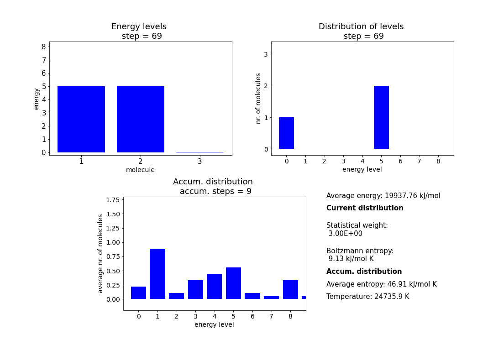

Main class
-
class
simbo_class.run_simbo(en, nop, nu)¶ -
-
__init__(en, nop, nu)¶ Initialize instance of run_simbo.
- Parameters
- enint
Average energy per particle (!) in reduced units.
- nopint
Number of particles.
- nuint
Spacing of energy levels in cm\(^{-1}\).
-
accum(maxlev, idist, distr, dist_sum, nstep, all_dist_sum)¶ Calculate the accumulated distribution over the levels as of the current simulaiton step.
- Parameters
- maxlevint
Highest possible level for the given total energy.
- idistnp.array, shape=[maxlev], dtype=int
Instantaneous sum of the distribution over the levels (not averaged over steps!).
- distrnp.array, shape=[maxlev], dtype=int
Instantaneous distribution of molecules over levels.
- dist_sumnp.array, shape=[maxlev], dtype=float
Average distribution of molecules over the levels as of the current step (basically idist divided by the number of steps).
- nstepint
Accumulated simulation step (current simulation step minus the number of steps spent on equilibration).
- all_dist_sumnp.ndarray, shape=[nstep, maxlev], dtype=float
Average number of particles (accumulated over simulation) at all steps so far simulated.
- Returns
- idistnp.array, shape=[maxlev], dtype=int
Updated instantaneous sum of distribution over levels.
- dist_sumnp.array, shape=[maxlev], dtype=float
Updated average distribution of molecules over the levels.
- all_dist_sumnp.ndarray, shape=[nstep, maxlev], dtype=float
Average number of particles (accumulated over simulation) at all steps up to nstep.
- nstepint
Updated accumulated simulation step.
-
calc_Bolt_ent(distr)¶ Calculate Boltzmann entropy from $$ {S = k \ln W} $$ where $$ {W = \frac{N!}{\Pi_j N_j!}} $$ with N being the total number of particles and N_j being the number of particles in a level j.
- Parameters
- distrnp.array, shape=[maxlev], dtype=int
Instantaneous distribution of particles over the levels.
- Returns
- S_wfloat
Boltzmann entropy
- Wint
Statistical weight
-
calc_Eav(maxlev, distr)¶ Calculate instantaneous average energy from instantaneous distribution of particles over the levels.
- Parameters
- maxlevint
Highest possible level for the given average energy.
- distrnp.array, shape=[maxlev], dtype=int
Instantaneous distribution of particles over the levels.
- Returns
- Ufloat
Average energy per particle.
-
calc_av_ent(dist_sum)¶ Calculate Boltzmann entropy for accumulated distribution from $$ {S = k \ln W} $$ where $$ {W = \frac{N!}{\Pi_j N_j!}} $$ with N being the total number of particles and N_j being the number of particles in a level j. Since the average number of particles is used, N is not an integer, so the Stirling approximation $$ {N! = N \cdot \log N - N} $$ is used for all instances of N! or N_j!.
- Parameters
- dist_sumnp.array, shape=[maxlev], dtype=float
Average distribution of particles over the levels at current step of simulation.
- Returns
- S_afloat
Average entropy at current step of simulation.
-
calc_prob_temp(dist_sum)¶ Calculate probability distribution from average distribution over levels (dist_sum). Since dist_sum gives the instantaneous average number of particles in each level, the instantaneous probability for a certain level, can be calculated by simply dividing by the total number of molecules. Because the logarithm of the probability ln p(r) is proportional to the temperature as $$ \ln {p(r) \sim -\frac{E}{T}} $$ (reduced units) in the Boltzmann distribution, we can do a least square fit to get the temperature, as the slope of a fit to ln p(r) against E will be equal to -1/T. In our case E will be the energy of a certain level and p(r) the probablility for this levels as calculated from dist_sum.
- Parameters
- dist_sumnp.array, shape=[maxlev], dtype=float
Average distribution of molecules over the levels at current simulation step.
- Returns
- tempfloat
Instantaneous temperature
-
exchange(ifrom, ito, itr, levels, istep)¶ Exchange energy between levels. Takes as input 'ifrom', 'ito' and 'itr' from the getrand() function. Increases level of 'ito' by 'itr' and decreases level of 'ifrom' by 'itr'. Update levels and increase simulation step by 1. If the level of 'ifrom' is zero, no exchange is performed and the simulation step is increased without updating the levels.
- Parameters
- ifromint
index of particle emitting quantum.
- itoint
index of particle absorbing quantum
- itrint
quantum to be exchanged
- levelsnp.array, shape=[nop], dtype=int
Current levels of the individual particles.
- istepint
Current simulation step.
- Returns
- levelsnp.array, shape=[nop], dtype=int
Updated levels of the individual particles.
- istepint
Updated simulation step.
-
find_max(all_levels, all_distr, all_dist_sum)¶ Finds maxima of stored data. All parameters were initialized by setzero and appended to by store_data.
- Parameters
- all_levelsnp.ndarray, shape=[steps, nop]
Levels of the individual particles at all steps of the simulation.
- all_distrnp.ndarray, shape=[steps, maxlev]
Number of particles in the individual levels at all steps of the simulation.
- all_dist_sumnp.ndarray, shape=[steps, maxlev]
Average number of particles (accumulated over simulation) at all steps.
- Returns
- max_levelint
Maximum level observed during simulation.
- max_distrint
Maximum number of particled in one level observed in simulation.
- max_dist_sumfloat
Maximum average number of particles in accumulated distribution.
-
find_skips(maximum)¶ Finds spacing for optimal axis labels of plots. More of a helper function for visualization.
- Parameters
- maximumint
Maximum of data to be plotted.
- Returns
- skipint
Optimal spacing of axis.
-
generate_levels()¶ Automatic generation of levels from random number generator. Generates random number r between 0 and 1, then calculates the level l of a particle as $$ {l = r \cdot 2 E_\mathrm{av} + 0.5.} $$
- Parameters
- nopclass attribute
See documentation of constructor.
- Returns
- levelsnp.array, shape=[nop], dtype=int
Initial levels of the individual particles.
-
getrand(levels)¶ Get random molecules to do exchange on. If we would simply select two random molecules each time, we would have the same transition probablility, but the probability densities in the initial and final states are different, so detailed balance would not be fulfilled. So instead we generate a random number in the range of 0 to the total energy, then sum over the levels, until we find the molecule at which the sum of levels is closest to the random number without going over. Set the index of this molecule as 'ifrom' and the quantum to be exchanged as the difference between the sum at this index and the random number. Find a second random number that is not 'ifrom' and set it to 'ito'.
- Parameters
- levelsnp.array, shape=[nop], dtype=int
Current levels of the individual particles.
- Returns
- ifromint
index of particle emitting quantum.
- itoint
index of particle absorbing quantum
- itrint
quantum to be exchanged
-
plot_frames(all_levels, all_distr, all_dist_sum, all_uav, all_wbolt, all_sw, all_sa, all_temp, units, frames)¶ Plots the first <frames> steps plus final step from simulation run, formatted in the same way as the animation.
-
recdist(levels, maxlev)¶ Calculates the instantaneous distribution over levels.
- Parameters
- levelsnp.array, shape=[nop], dtype=int
Current levels of the individual particles.
- maxlevint
Highest possible level for the given total energy.
- Returns
- distrnp.array, shape=[maxlev], dtype=int
Instantaneous distribution of particles over levels.
-
run(levels, nstot)¶ Runs simulation after initialization by exchanging energy of two molecules each step for nstot steps. Will only accumulate and store data after equiibration. Returns stored data and calculated thermodynamic properties for all steps.
-
run_eq(levels, nstot)¶ Runs simulation after initialization, but only calculates and saves instantaneous distribution over levels, instantaneous statistical weight and instantaneous Bolzmann entropy.
-
setzero(levels)¶ Initialize all arrays and counters by setting them to zero.
- Parameters
- levelsnp.array, shape=[nop], dtype=int
Initial levels of the individual particles.
- Returns
- maxlevint
Highest level possible for the given total energy, eg. if levels are [1, 1, 2], the highest occupied level will be 4. Used to initialize all arrays that show distribution of molecules over the levels.
- idistnp.array, shape=[maxlev]
Instantaneous distribution of levels, i.e. how many molecules are in each level in this step.
- dist_sumnp.ndarray, shape=[steps, maxlev]
Accumulated distribution.
- nstepint
Accumulated steps.
- istepint
Current step of simulation.
- all_levelsnp.ndarray, shape=[steps, nop], dtype=int
Levels of the individual particles at all steps of the simulation.
- all_distrnp.ndarray, shape=[steps, maxlev], dtype=int
Number of particles in the individual levels at all steps of the simulation.
- all_dist_sumnp.ndarray, shape=[steps, maxlev], dtype=float
Average number of particles (accumulated over simulation) at all steps.
- all_uavnp.array, shape=[steps], dtype=float
Average energy at all steps of the simulation.
- all_wboltnp.array, shape=[steps], dtype=float
Boltzmann entropy at all steps of the simulation.
- all_swnp.array, shape=[steps], dtype=int
Statistical weight (binomial formula) at all steps of the simulation.
- all_sanp.array, shape=[steps], dtype=float
Average entropy at all steps of the simulation (calculated from accumulated distribution using Stirling approximation).
- all_tempnp.array, shape=[steps], dtype=float
Temperature calculated from a fit of the probability distribution to the Boltzmann distribution.
- zero_arraynp.array
I have no idea what this is for, but I am too scared to remove it.
-
show(all_levels, all_distr, all_dist_sum, all_uav, all_wbolt, all_sw, all_sa, all_temp, units)¶ Shows animation of stored data from simulation run using matplotlib.animation. Animation frames will look like picture below (example for simulation of 3 particles).

-
store_data(levels, all_levels, all_distr, all_uav, maxlev, distr, all_wbolt, all_sw, all_sa, dist_sum, all_temp)¶ Appends to stored data. For levels and distr, values that are zero are set to 0.05 instead, so they can be displayed in the animation in show().
-